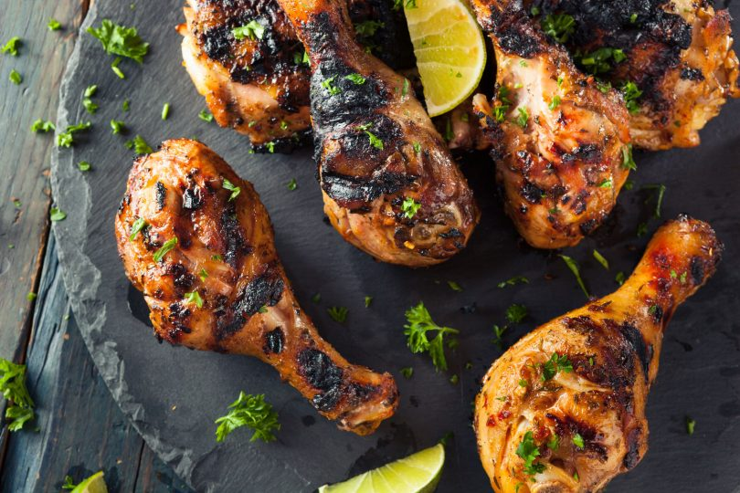

Home Page
Dame's Jerk Chicken
Jerk Chicken

Jamaican Jerk Chicken Recipe
Jerk chicken is one of Jamaicas favorite dishes that is famous far beyond
the shores of its native home. it uses ingendients and techinques that combined
a blend of history of the different peoples of the island of Jamaica to give a unique
taste found no where else.
INGREDIENTS:
- 4 lbs. Chicken.
- 12 Tablespoons Jerk Seasoning.
- Lemon Juice or Vinegar.
- 2 Teaspoons Paprika.
- 2 Tablespoons Dry Jerk Seasoning<./li>
METHODS
- Clean and wash the chicken with either lemon juice or vinegar.
- Pour the jerk seasoning/marinade in a bowl<./li>
- Add garlic, salt, paprika & Dry jerk seasoning. Stir the ingredients.
- Rub in the jerk seaosning/marinade
- Leave overnight in fridge, in a zipbag
- Preheat oven to 200F & precook the chicken for 30 minutes.
- Light the coal in the barbecue grill. Make sure the grill has a lid.
- Add pimento(allspice) branches to the charcoal.
- Move chicken to grill when the fire on the grill is low.
Cover the grill with lid. Grill the chicken over the low flame for 3
hours.
- Chop meat into peices and enjoy.